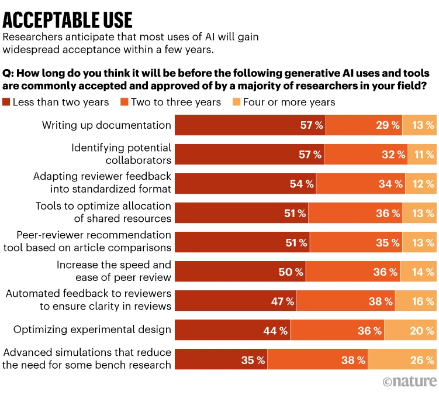
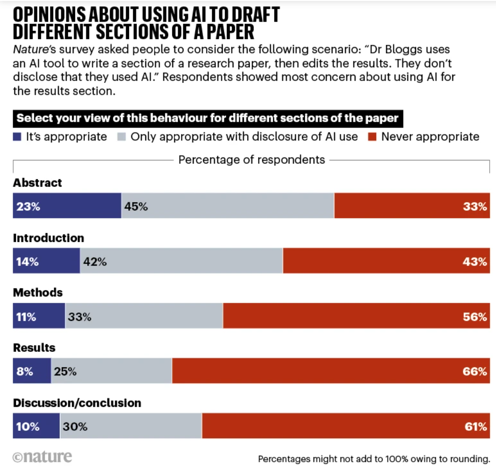
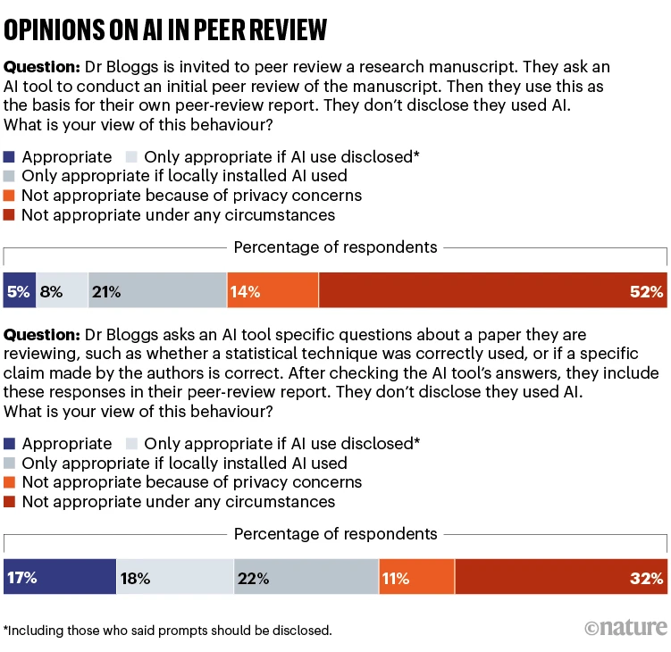
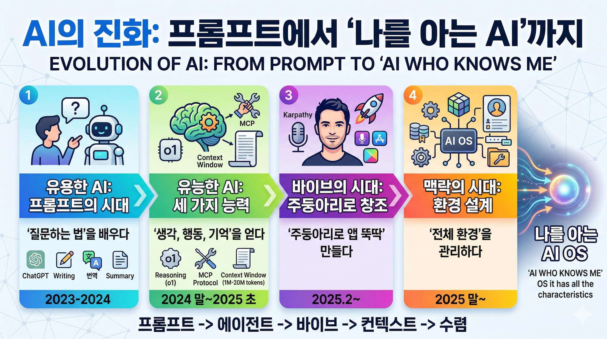
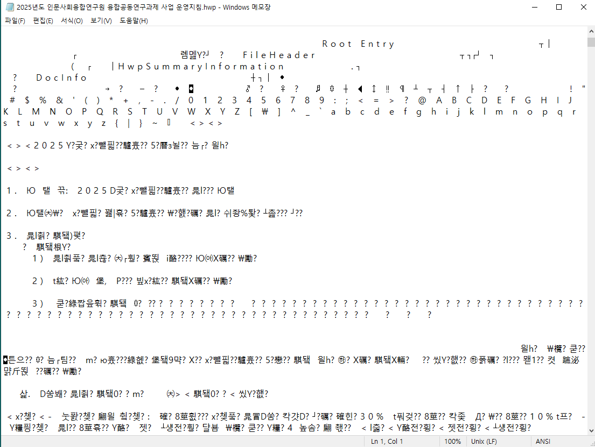
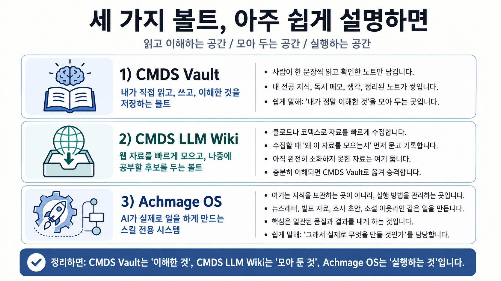
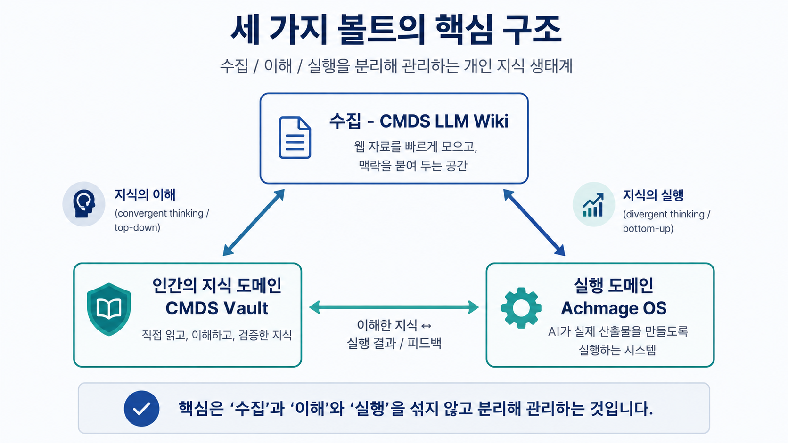
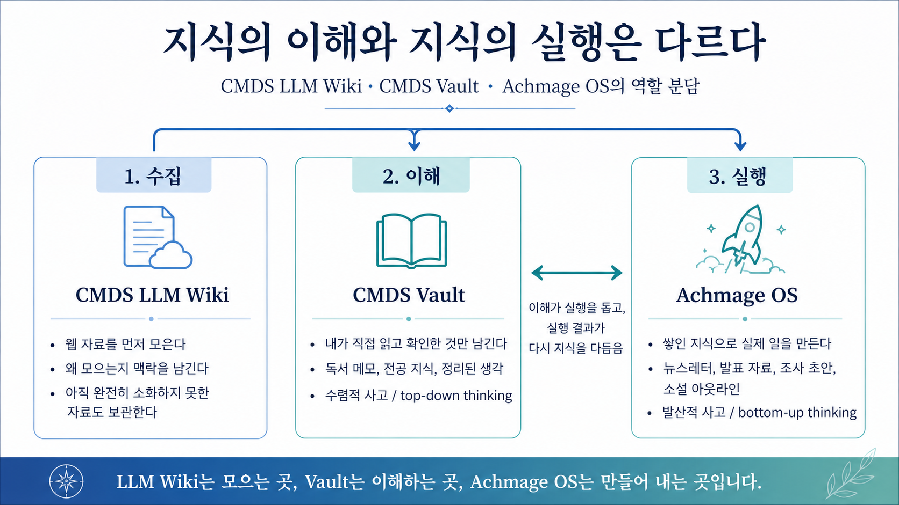
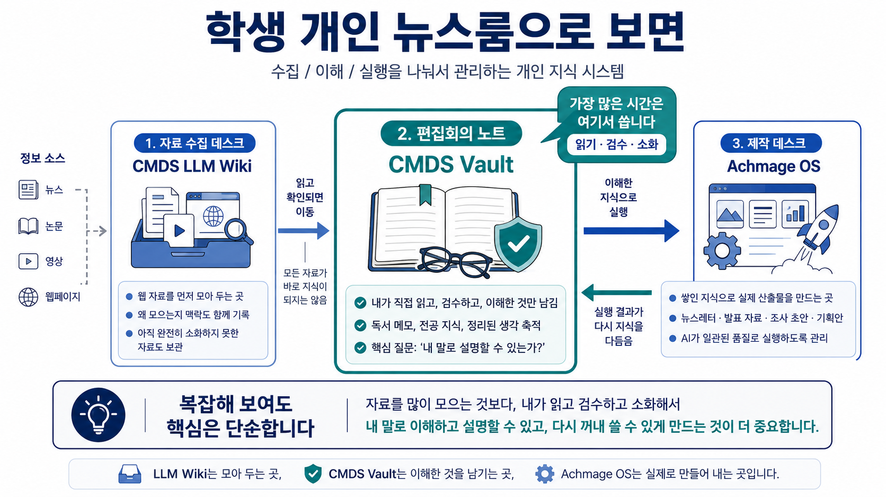

CONTENTS
Part 0. Intro: 20년차/9년차 KBS 기자도 고전하는 SK AX AI역량시험
SK의 AI 역량 교육 및 인증 시험 시스템에 대한 내용이 보도된 KBS 뉴스 2026-6-1일자 유튜브 영상.
해당 시험은 SK AX AI Talent Lab 웹사이트 에서 응시하는 것으로 보이며, ID는 SK를 통해서만 만들 수 있는 것으로 보인다 (아마 SK 내부 시스템인것 같다)
- SK AX의 'AI 역량 인증 플랫폼'은 생성형 AI 분야 정부 공인으로, "AI로 일하는 방식을 바꿀 수 있는가 (워크플로우를 바꿀 수 있는가)"를 측정하는 시험이라고 한다.
인증 과정은 두 단계로 나뉜다. 첫 단계인 ‘AI 리터러시(Literacy)’ 는 생성형 AI의 기본 원리 이해부터 프롬프트 활용, 일상 업무 적용 능력을 검증한다. 구성원은 온라인 플랫폼을 통해 학습과 시험에 참여하고, 실제 업무 맥락에서 AI 문해력과 실행력을 평가받는다. 다음 단계인 ‘AI 부트캠프(Boot Camp)’ 에서는 한층 높은 수준의 AI 활용 역량을 검증한다. 검색증강생성(RAG) 기반 시스템, AI 기능이 적용된 웹·앱 개발 등 실습 중심 교육을 거쳐, AI 에이전트 서비스를 직접 설계·개발하고 결과물에 대한 기술 평가를 통해 인증을 받는다.
- 아래 안경을 쓰지 않은 KBS 방준원 기자에 대해 찾아보았다.
- 나무위키에 등재된 KBS 뉴스 구성원 정보에 따르면, 방준원 기자는 2018년 (45기)로 2026년 현재 기준 9년차 KBS 기자라고 한다.
- SK AX AI 능력시험에서 A를 맞았다고 한다 (최고 등급: S까지)
- 아래 안경을 쓴 KBS 김준범 기자에 대해 찾아보았다.
- 나무위키에 등재된 KBS 뉴스 구성원 정보에 따르면, 김준범 기자는 2007년 (33기)로 2026년 현재 기준 20년차 KBS 기자라고 한다.
- SK AX AI 능력시험에서 B를 맞았다고 한다 (최고 등급: S까지)
- 20년차 KBS 기자와 9년차 KBS 기자가 각각 SK AX 역량시험에서 B등급과 A등급을 기록했고, 최 등급인 S를 기록하지 못했다.
- KBS 유튜브 영상 본문에서도 나오지만, AI를 어떻게 활용하는 과정을 거쳤는가를 기준으로 활용 과정을 채점한다고 하고 있다.
- 영상 본문에서도 나오는 윤성환 (SK AI시험 사업부 팀장)에 따르면, "코딩을 몰라도 풀 수 있고, 핵심은 내게 주어진 문제를 얼마나 구조화하고 단계적으로 접근을 하느냐를 중점으로 평가한다" 고 말하며 AI활용 과정 자체를 평가한다고 분명하게 밝히고 있다.
- 같은 영상의 다른 스크린샷. 기업들이 문제 해결 능력을 평가하겠다는 방향으로 AI 활용 역량을 측정정하겠다는 채용 방향은 아래 스크린샷을 통해 단적으로 드러난다:
- 즉, 미디어 콘텐츠 산업에서도 방송국이니까 1) 프리미어 프로/애프터 이펙트를 가지고 만든 방송영상 포트폴리오가 있느냐 2) 글쓰기 능력이 되느냐 두 가지만 보는 것이 아니라, 추가로 글쓰기·기획력 × AI 구조화 능력 × 바이브 코딩 실행력 세 가지를 동시에 보는 신입 PD 공개채용을 위한 바이브 코딩 시험이 추가될 수 있다는 것이다.
- 예를 들어 이런 과제를 바이브 코딩으로 만들도록 해서 문제해결 과정을 볼 수 있을 것이다:
- KBS 유튜브 영상 밑에 시청자 민원 댓글 50개를 분류·요약하는 웹 대시보드 만들기
- 드라마 시놉시스를 입력하면 회차별 구조와 장르 분석을 정리해주는 도구
- 특정 이슈에 대한 팩트체크 흐름도(플로우차트) 앱


Part 1. Academy and Research
1.1 How are researchers using AI Survey reveals pros and cons for science
핵심 요약: Nature에 실린 Article. 존 와일리 & 선즈 (Wiley)의 2025-2-4일자 "전 세계 연구자의 AI활용 실태" 설문 조사
- 전 세계 4,946명을 대상으로 한 설문조사
- 그 중 1,043명만 실제로 AI를 연구에 사용했다고 답함
- 가장 흔한 용도: 번역, 교정, 원고 편집
- GPT 이외에 다른 AI 서비스 (Gemini, Claude, Grok, Copilot 등) 도 들어본 사람은 344명 정도에 불과 (전체 응답자 4,946명 중 약 7%에 불과)
- 응답자의 66% : Need for (AI) training (44%) + Unsure of where to start (22%)
- "AI의 제대로 된 활용에 대한 지침 및 교육 부족으로 인해 AI를 원하는 만큼 활용하지 못하고 있다 (Naddaf, 2025. 2. 4)
- 원고 작성, 보조금 신청서, 동료 평가 등 인공지능(AI) 도구를 활용하는 과정이 향후 2년 내에 널리 받아들여질 것`

1.2 Is it OK for AI to write science papers Nature survey shows researchers are split
Nature 에서 2025-5-14에 전 세계 5,000여명의 연구자를 대상으로 Dr.Bloggs 라는 가상의 AI활용 연구자를 가지고 만든 시나리오를 통해 어떤 AI 활용이 허용되는지에 관한 설문 조사를 실시하였음
- 원고 초안을 사람이 직접 작성 후 AI로 단순 편집 (논문의 톤, 문장의 길이 등): 허용 가능 90%
- AI 사용 여부를 밝혀야 한다: 55%, 그러나 프롬프트까지 밝혀야 한다는 답변은 20%에 불과
- 원고의 단순 번역에 AI를 활용하는 경우: 허용 가능 91%
- AI 사용 여부를 밝혀야 한다: 55%, 프롬프트까지 밝혀야 한다는 답변은 전체의 42%
- 논문의 특정 부분 원고를 AI를 사용해서 아웃라인을 기반으로 draft를 작성하거나, AI를 활용해서 다른 paper를 요약하고 인용하는 경우: 허용 가능 약 65%
- 아웃라인 기반 draft 작성: 52%가 AI 사용여부 밝혀야 한다 (프롬프트까지 밝혀라: 23%)
- AI활용 paper 요약 및 인용: 50%가 AI 사용여부 밝혀야 한다 (프롬프트까지 밝혀라: 19%)
- 다만, 초록이나 서론 부분 이외에 다른 부분에 대해서는 AI를 절대 사용하지 말아야한다는 의견이 우세
- 특히 Methods, Results, Discussion, Conclusion 파트는 절대 반대가 과반 이상
- Nature 2025-5-14 조사 결과 중요한 부분: "AI는 (연구에) 여전히 소수만 사용합니다"
- 가상의 시나리오가 아니라, '네가' AI를 연구에 활용해본 경험이 있냐? 는 질문에 대해
- 논문 단순편집 정도에만 써봤다는 의견이 28%에 그침
- 번역, 요약, 논문 초안 작성 등에 활용해봤다는 의견은 각각 8% 미만
"응답자들이 논문 작성이나 검토를 위해 AI를 사용했다고 자기보고한 경험은 예상대로 시나리오에 대해 긍정적인 의견을 가진 것과 강한 상관관계를 보였음 (However, respondents’ self-reported experience with AI for writing or reviewing papers did correlate strongly with having favourable opinions of the scenarios, as might be expected)"




1.3 Artificial intelligence tools expand scientists’ impact but contract science’s focus
- Nature에 실린 연구. Hao et al. (2026)의 논문으로 Nature에 2026년 1월에 실린 연구자의 AI 활용여부에 대한 최신 연구 결과
- 1980년부터 2025년 사이의 4129만 여편의 논문을 분석
- "주제가 AI를 다루는" 논문을 제외하고, "AI를 도구로 써서 자연과학 연구를 한 논문" 을 분석
- Abstract에 "AlphaFold AI를 활용해서 단백질을 분석했다"같이 밝힌 논문들에 해당
- 연구결과, AI 활용여부를 밝힌 논문을 publish 하는 (자연과학) 연구자의 경우:
- 논문 출판 (Publish) 편수 3.02배 증가
- 인용 횟수 (Citation) 4.84배 증가
- 팀장급으로 승진하는데 걸리는 시간 1.37년 단축
- "어떻게 사용하는 것이 올바른 사용이냐"에 대해서는 아직도 연구자들 사이에서 의견이 분분하다.
- 자연과학의 경우 AI를 안 쓰면 바보가 되는 구조
- 논문 인용횟수는 3배 늘고, Impact Factor도 4배 늘어나는데, "새로 발표된 논문끼리"는 서로 토론이나 인용 등을 안 한다? (새로 논문이 발표 되도 그게 결국 '최초의 원본' 논문만 참조하는 경향이 있다고 하는 것이 Hao et al. (2026)의 발견)
- 그러나, 역설적으로 장기적으로는 AI를 쓴 논문은 연구주제가 original한 연구주제로 확장되는 방향성을 가지지 않고, '기존 인기 주제 연구를 또 하는' 방향으로 강화될 우려
- 단순히 AI를 쓰느냐 마느냐의 문제가 아니라, 연구자의/인간의 Original Data를 가지고 있느냐의 문제가 중요하다는 점을 시사함
- 관련글: 당신이 사고하는 지식생산의 주권은 누구에게 있는가 - What you need is a Soverign PKM
논문 인용횟수는 3배 늘고, Impact Factor도 4배 늘어나는데, "새로 발표된 논문끼리"는 서로 토론이나 인용 등을 안 한다? (새로 논문이 발표 되도 그게 결국 '최초의 원본' 논문만 참조하는 경향이 있다고 하는 것이 Hao et al. (2026)의 발견)
1.4 More than half of researchers now use AI for peer review — often against guidance
Nature에 실린 2025-12-16일자 기사.
Is it OK for AI to write science papers Nature survey shows researchers are split 글에도 나와있지만, Nature에 2025. 5월 14일자로 실린 Nature 설문 조사 결과 (5000여명 대상, 2025. 5. 14)에서는 Peer review 에 AI를 절대 활용하지 말아야 한다는 의견이 52% 에 해당했다.
그러나 2025. 5월의 네이쳐 연구결과와 달리, 단 7개월만에 Frontiers의 설문조사 결과는 위 통계를 뒤집었다. 전 세계 1,600여명의 연구자를 대상으로 한 설문조사 결과 55%가 이미 AI를 Peer review에 사용하고 있다는 보고서가 나왔다:

1.5 Unlocking AI’s untapped potential - responsible innovation in research and publishing 의 종합 권고안 (Summary of Call to Actions)
Frontiers (2025)의 Academy의 AI활용에 관한 2025년 12월 말 보고서 (PDF)의 결론 부분.
- AI가 워크플로우 전반(초기 스크리닝~최종 출판)에서 언제, 어디서, 어떻게 활용되는지 공개할 것
- AI 지원 프로세스를 상세히 담은 정기 투명성 보고서를 발행하고 커뮤니티 피드백을 수렴할 것
- 기관·연구그룹·편집팀 전반에 걸쳐 AI 리터러시 교육에 투자할 것
- 자기 학습을 넘어, 연구자·관리자·심사자가 AI를 책임감 있고 비판적으로 활용할 수 있도록 구조화된 교육 및 공인 프로그램으로 전환할 것
- 비판적 프롬프팅, 검증, 편향 탐지, 투명한 AI 활용을 신흥 학술 역량으로 장려할 것
- 연구 평가 및 편집 의사결정 전반에 걸쳐 AI 운용 기준을 명확히 수립할 것
- AI 지원 결과에 대한 인간의 책임, AI 도구의 편향 테스트, 재현성 감사를 의무화하여 연구 무결성을 보호할 것
- AI 도입의 모든 단계에 공정성을 내재화할 것
- 분야·지역·기관 전반에 걸쳐 AI 역량에 대한 공평한 접근을 보장하고, 구조적 편향을 줄이며 언어·문화적 포용성을 지원할 것
- 연구자·편집자·기관이 AI 정책 수립·개선에 공동 참여하도록 할 것
- 문제를 조기에 감지하고 프레임워크를 유연하게 조정할 수 있도록 투명한 피드백 메커니즘을 구축할 것
- 연구 및 출판 전반에서 책임 있는 AI 거버넌스를 촉진할 것
- 감사 및 영향 평가에서 도출된 근거를 바탕으로 글로벌 정책 및 표준 수립에 기여할 것
- 결과를 투명하게 공유하여 신뢰와 책임을 강화할 것
보고서의 종합 권고안을 다시 자세히 살펴보면 핵심 키워드가 반복적으로 관찰된다:
- AI 워크플로우 전반에 걸친 활용 검증 방법 및 가이드라인 마련
- AI워크플로우 전반에 대한 기관 차원의 AI활용 프로세스 교육
- AI 리터러시 교육의 투자
- 비판적 프롬프팅, 검증, 편향 탐지, 투명한 AI활용 등 과정 그 자체를 교육/평가할 수 있는 체계
그런데 '과정'을 평가하려면 '도메인 지식'이 저장되어 있어야 한다
- 그 '과정'을 반복적으로 평가하고 재활용하려면, 지식을 "어디에" 저장할 것인가?
- GPT 채팅창에? 새 창을 열 때마다 맥락은 초기화된다.
- 머릿속에? 생각날 때마다 다시 처음부터 재구성해야 한다.
- 네이처 설문 조사 결과에서도 '프롬프트' 활용까지도 정확하게 공개해야 한다는 응답의 비중이 꽤 있었다.
- 그런데, 연구에 활용된 '프롬프트'도 공개하려면, 그 프롬프트를 체계적으로 저장하고 관리하 기록해야 하잖아요?
- "나도 AI 써봤는데, 지난번에 GPT한테 물어봤던 질문 어디에 있더라.." 이런 상황이 반복된다.
- 프롬프트 그냥 채팅창에 놔뒀다가 필요하면 찾아서 복붙하면 되는거 아니에요? 라고 할 텐가?
- 굳이 옵시디언이 아니어도 괜찮다. 노션이어도 괜찮다. 핵심은 그런 '프롬프트'든 뭐든 과정을 기록하는 개인 지식관리 시스템 (PKM) 이 애초에 존재하느냐의 문제다.
PART 2Part 2. 저널리즘/미디어 학과의 AI시대의 방향성
2.1 미국 Accrediting Council on Education in Journalism and Mass Communication (ACEJMC) 이 밝힌 저널리즘·매스커뮤니케이션 전공 졸업생의 핵심 역량
Individual professions in journalism and mass communications may require certain specialized values and competencies. Irrespective of their particular specialization, all graduates should be aware of certain core values and competencies and be able to: • apply the principles and laws of freedom of speech and press, in a global context, and for the country in which the institution that invites ACEJMC is located;
• demonstrate an understanding of the multicultural history and role of professionals and institutions in shaping communications;
• demonstrate culturally proficient communication that empowers those traditionally disenfranchised in society, especially as grounded in race, ethnicity, gender, sexual orientation and ability, domestically and globally, across communication and media contexts;
• present images and information effectively and creatively, using appropriate tools and technologies;
• write correctly and clearly in forms and styles appropriate for the communications professions, audiences and purposes they serve;
• demonstrate an understanding of professional ethical principles and work ethically in pursuit of truth, accuracy, fairness and service to all people and communities.
• apply critical thinking skills in conducting research and evaluating information by methods appropriate to the communications professions in which they work;
• effectively and correctly apply basic numerical and statistical concepts;
• critically evaluate their own work and that of others for accuracy and fairness, clarity, appropriate style and grammatical correctness;
• apply tools and technologies appropriate for the communications professions in which they work.
- 적절한 도구와 기술을 사용하여 이미지와 정보를 효과적이고 창의적으로 제시할 것;
- 커뮤니케이션 직업, 대상 독자, 목적에 적합한 형식과 스타일로 정확하고 명확하게 글을 작성할 것;
- 전문 윤리 원칙에 대한 이해를 보여주고, 진실, 정확성, 공정성 및 모든 사람과 공동체에 대한 봉사를 위해 윤리적으로 일할 것.
- 비판적 사고 능력을 활용하여 자신이 일하는 커뮤니케이션 직종에 적합한 방법으로 연구 수행 및 정보 평가 수행;
- 기본적인 수치 및 통계 개념을 효과적이고 정확하게 적용할 것;
- 자신의 작업과 타인의 작업의 정확성과 공정성, 명확성, 적절한 스타일 및 문법적 정확성을 비판적으로 평가한다;
- 그들이 일하는 커뮤니케이션 직종에 적합한 도구와 기술을 적용
- 핵심 인사이트:
- 미디어스쿨의 기본 역량은 원래부터 ‘정보를 찾고, 평가하고, 검증하고, 표현하는 능력’이었다.
- 그런데, 생성형 AI시대에 미디어스쿨 전공생들은 바로 그 정보를 찾고, 평가하고, 검증하고, 표현하는 능력 자체가 현저히 부족하며, 그 원인은 글을 쓰고, 글을 쓰기 위해 사고를 하며, 사유의과정을 거친 글들을 머릿속에 구조화된 지식으로 아카이브화, 또는 체계적인 수첩 노트로 기록, 또는 디지털 노트 아카이브 (예: 노션, Zotero, 옵시디언 등)에 해당하는 개인 지식관리/기록관리 시스템이 없기 때문이다.
2.2 Columbia Journalism School (CJS 2030)
- 교육 방향을
Learn. Build. Critique로 정하고, 단순히 AI를 쓰는 법이 아니라, 뉴스룸 교육, 공개 튜토리얼, 연구와 실험, AI가 뉴스 생태계와 신뢰에 미치는 영향, 윤리적·책임 있는 사용, 보도와 연구를 돕는 새 도구 만들기를 포함하며, - AI를 저널리즘에 통합하면서도 윤리, 투명성, 신뢰를 우선한다고 설명하고,
- 데이터 저널리즘에서 자료를 찾고, 모으고, 분석해서 스토리텔링·발표·탐사보도에 쓰는 능력을 강조
콜럼비아 저널리즘 스쿨도 AI를 ‘도구 사용’이 아니라, 배우고, 만들고, 비판하는 교육으로 잡고 있고, 그 과정에서 자료를 찾고, 모으고, 분석하고, 수집할 수 있는 역량을 강조하고 있다는 점이 분명하다. 데이터 저널리즘 혹은 탐사보도와 같이 복잡한 데이터와 스토리텔링이 엮여있는 '미디어 콘텐츠'를 만들어내기 위해서는 단발성 프롬프트가 아니라,
- 자료·출처·분석·판단이 남는 지식 작업 환경을 구축하고,
- 그 작업 환경에서 구축된 데이터를 AI가 정확하고 빠르게 읽고 쓸 수 있는 포맷으로 관리해야 하며,
- 인간의 검수를 거친 구조화된 고품질 데이터를 개인이 스스로 디지털 아카이브로 구축해야 한다.
2.3 USC AIMS의 사례
- USC의 AIMS, AI for Media & Storytelling은 USC School of Cinematic Arts와 Annenberg School for Communication and Journalism이 함께 운영하는 프로그램
- 이 프로그램은 AI를 미디어와 스토리텔링에서 실험하고, 발명하고, 연구하고, 가르치고, 토론하는 것을 목표로 함
2.3.1 Columbia Journalism Review "How We're Using AI" (2025-5-12) 핵심 정리
- CJR과 USC AIMS가 공동으로 18명의 기자·편집자·경영진에게 "당신은 AI를 어떻게 쓰는가"를 물은 기획.
- 답변 전체를 관통하는 메시지는 명확하다:
- AI는 '도구'이지 '두뇌'가 아니며, 인간이 만든 구조화된 지식 위에서만 제대로 작동한다.
1. "AI is for productivity, not writing" (Emilia David, VentureBeat)
- AI를 정리·요약·아이디어 다듬기 등 생산성에는 쓰지만, 글쓰기 자체는 절대 맡기지 않는다고 선언. ("As much as I believe that AI helps my productivity, I refuse to use it for writing.")
- 글쓰기는 독자와의 관계이자 '내가 왜 이것을 전달하는가'에 대한 인간의 판단이다. ("If I let AI models write for me, I feel like I've taken away an important part of that relationship with my readers… Human journalists bring the context to news stories to their human readers.")
- → 글쓰기 훈련을 AI에 넘기면 역량 자체가 사라진다는 우리 논지와 정확히 일치.
2. "On its own, AI is a parlor trick" (Zach Seward, NYT AI 총괄)
- AI 단독으로는 '눈속임'에 불과하고, 제대로 구조화된 데이터와 무엇을 하는지 아는 사람과 결합될 때만 유용하다. ("AI on its own is a parlor trick. Like all software, it's useful when paired with properly structured data and someone who knows what they're doing.")
- 즉, 인간이 미리 구축해둔 구조화된 데이터와 도메인 지식 베이스가 전제되어야 한다 → PKM의 존재 이유를 가장 직접적으로 뒷받침.
3. "AI should be considered a hand, not a brain" (Susie Cagle)
- AI는 내가 설정한 규칙과 한계 안에서 움직이는 '손'일 뿐, 판단하는 '두뇌'가 아니다. ("I don't fear AI if it's used as a hand, not a brain.")
- AI에 맡기면 빨라지지만 덜 인간적이고, 그래서 근본적으로 덜 진실해진다. ("But by making it less human, it would also make it fundamentally less true.")
4. 스마트하지만 거짓말하는 조수 (Nicholas Thompson, The Atlantic CEO)
- 책을 쓸 때 AI를 "엄청나게 빠르고 박식하지만 글은 못 쓰고 헛소리(BS)를 잘하는 리서치 조수"로 사용. ("I use AI the way I would use an insanely fast, remarkably well-read, exceptionally smart research assistant who's also a terrible writer who happens to BS a lot.")
- 결정적 조건: 자신이 쓴 원고와 인터뷰 녹취록을 먼저 업로드한 뒤 검증시킴 → 인간의 1차 자료/기록이 있어야 AI가 작동. ("I'll upload sections of my book, along with interview transcripts, and ask whether everything I've written squares with what my sources have said.")
- 글쓰기 자체는 절대 시키지 않음. ("I would never ask it to write anything, though. That seems unethical and stupid.")
이 기획에 등장하는 거의 모든 기자가 AI를 쓰는 방식은 동일한 구조를 가진다:
- 인간이 먼저 자료를 모으고, 취재하고, 글을 쓴다 (1차 데이터 생성)
- 그 자료를 AI에게 정리·검증·요약·번역시킨다 (AI는 보조)
- 최종 판단과 발행은 다시 인간이 한다
- Ben Welsh(Reuters):
- 코드의 1/4을 AI가 쓰지만 "고삐를 단단히 쥐고 AI의 제안을 단속해야" 품질이 올라간다. ("If we keep the reins tight and police the AI's proposals, this spooky form of autocomplete can improve the speed and quality of our coding.")
- Sarah Cahlan(WaPo):
- AI로 위성사진 속 장갑차를 탐지하지만 AI가 유일한 출처라면 절대 보도하지 않는다. ("We won't publish a story if our only source is AI—it's not a substitute for the careful review of journalists.")
- Khari Johnson(CalMatters):
- 전사에 AI를 쓰되 항상 직접 다시 들어 확인한다. ("I always listen back to an interview to ensure that the AI didn't get any words wrong.")
결론적으로 이 글이 증명하는 것은: AI를 잘 쓰는 기자일수록, 자신만의 1차 자료·취재 기록·검증된 데이터를 체계적으로 축적·구조화하고 있다는 점이다. 구조화된 개인 지식이 없는 사람에게 AI는 'parlor trick(눈속임)'에 그친다. → 미디어스쿨 학생들에게 개인 지식관리 시스템 (PKM)이 필요한 이유와 정확히 같은 논리.
2.4 Northwestern University의 "Agentic Investigation Challenge"
What do I submit? A complete submission includes Agent Skill(s) as directories, a findings report as a PDF, interaction traces as raw JSON or a rendered page, and a README.md that explains how the materials fit together. We will share the submission form with registered teams.
Teams will submit:
- Agent skills — the reusable workflow they built, including any new skills developed
- Findings report – a written summary of the newsworthy discoveries produced by running the skill(s) on the data plus any outside material brought in to enhance the investigation
- Interaction traces – full logs of the model sessions, including inputs, tool calls, outputs, and the moments when human judgment intervened
- README.md – a brief map of the submission, including skills, which findings they support, where the relevant traces are located, any outside data used, any conflicts of interest and whether findings suggest possible legal violations that should be flagged to the evaluation panel
이 공모전은 단순히 "AI로 취재한 기사 한 편"을 내라는 것이 아니다. 취재 결과물과 함께, AI를 어떻게 썼는지에 대한 모든 과정 기록을 통째로 제출하라고 요구한다. 제출물 네 가지를 하나씩 풀어보면:
① Agent skills (에이전트 스킬) = "내가 만든 재사용 가능한 AI 작업 절차"
- 쉽게 말해, "이런 종류의 자료가 들어오면, AI에게 이런 순서로 시켜라" 라는 나만의 작업 매뉴얼·워크플로우다.
- 예: "수천 건의 정부 계약서가 들어오면 → ① 날짜순 정렬 → ② 특정 키워드 추출 → ③ 이상 거래 패턴 분류" 같은 절차를 하나의 재사용 가능한 도구로 정리한 것.
- 즉, 한 번 쓰고 버리는 프롬프트가 아니라 "반복해서 쓸 수 있도록 구조화·저장해 둔 지식 자산"을 내라는 것이다.
- 특히 Agent Skills는 예를 들어 '제목을 작성하는 에이전트 스킬'이라면, "왜 이런 방식으로 제목을 뽑는지", 예를 들어 "NYT 방식으로 제목을 뽑기 위해서는 주어와 동사를 이렇게 쓰고 형용사나 부는 자제해라 몇 단어 이상을 쓰지 말고 한 문장 이내로만 써라" 같은 아주 구체적인, '프롬프트임에도 불하고 10번 돌렸을때 9번 이상 그대로 거의 똑같은 output을 보장할 수 있는 프롬프트를 쓰려면 어떤 방식으로 동작해야 하는지'를 사람이 구체적으로 프롬프트를 구조화해서 명세서를 만들어야 한다.
- 이런 프롬프트, 그러니까 Agent Skills는 단순한 프롬프트가 아니라, 재현 (replication)이 가능한 프롬프트냐를 기준으로 만들어야 하는 것이며, 바로 그러한 Skills 파일을 제출하라는 것이다.
② Findings report (PDF) = "그래서 무엇을 발견했는가"
- 그 워크플로우를 실제 데이터에 돌려서 나온 보도 가치 있는 발견을 인간이 글로 정리한 최종 결과물.
- 핵심은 "data plus any outside material" — 주어진 데이터뿐 아니라 내가 따로 끌어온 외부 자료까지 결합해야 한다는 점. 결국 인간이 별도로 축적·관리하던 자료가 있어야 가능하다.
③ Interaction traces (raw JSON, full logs) = "AI와 나눈 모든 대화의 완전한 기록"
- 이것이 핵심이다. AI 세션의 전체 로그(full logs)를 날것 그대로 내라는 것:
- inputs = 내가 AI에게 넣은 모든 입력 (프롬프트, 질문, 자료)
- tool calls = AI가 중간에 어떤 도구·검색·코드를 호출했는지
- outputs = AI가 내놓은 모든 응답
- the moments when human judgment intervened = "여기서 AI가 틀려서 내가 개입해 바로잡았다"는 인간 판단의 순간까지 전부
- 구체적으로 말하면: Claude Code나 ChatGPT를 썼다면, 그 채팅창 기록을 처음부터 끝까지 — 프롬프트 내용, 요청 시각, AI의 응답, 내가 수정한 지점까지 — 단 하나도 빠짐없이 통째로 긁어서 제출하라는 뜻이다.
- 특히 inputs, tool calls, outputs, human-in-the-loop (=인간이 중간에 개입해 판단·수정한 지점)개입 여부를 몽땅 기록으로 제출하라는 것은, 쉽게 말해:
- Claude Code 또는 CODEX 급의 굉장히 헤비한 코딩 작업을 여러 세션에 걸쳐서 할 수 있는 AI 작업 환경 (GPT 웹버전 수준이 아니라) 이 있어야만 가능하다.
- Claude Code나 CODEX의 "작업기록"을 남기기 위해서는 엄청나게 방대한 분량의 md 파일 문서를 수십-수백개씩 기록하고 전부 사람이 읽어보고 관리할 수 있어야 한다.
- 이러한 작업은 개인지식관리 시스템이 없으면 절대로 일관되게 인간이 기록하고 컨트롤할 수 없다.
④ README.md = "이 모든 게 어떻게 연결되는지에 대한 지도"
.md는 마크다운(=옵시디언이 쓰는 바로 그 포맷) 파일이다.- 어떤 스킬이 어떤 발견을 뒷받침하는지, 관련 로그가 어디에 있는지, 외부 데이터·이해관계 충돌·법적 문제 소지까지 전체 구조를 한눈에 정리한 색인(index).
위 네 가지를 종합하면, 이 공모전이 진짜로 평가하는 것은 "결과물"이 아니라 "과정의 추적 가능성(traceability)"이다. 그리고 이 과정을 제출하려면 다음이 반드시 전제되어야 한다:
- 모든 프롬프트와 응답이 시간 순서대로 보존되어 있어야 한다 → 채팅창을 닫으면 사라지는 방식으로는 불가능. 별도로 저장·관리하는 시스템이 필요하다.
- 외부 자료(outside material)를 미리 축적해 두어야 한다 → 평소에 자료를 모으고 구조화해 둔 개인 지식베이스가 없으면 결합할 재료 자체가 없다.
- "내가 어디서 AI를 바로잡았는가"를 기록해야 한다 → 인간의 판단·검증 과정이 남아 있어야 하며, 이는 기록하는 습관과 도구 없이는 불가능하다.
- 이 모두를 마크다운(README.md)으로 연결·색인해야 한다 → 정확히 옵시디언 같은 PKM이 하는 일.
작업 과정 전체를 '파일'로 만들어 제출하라는 요구 자체가 결정적이다.
- GPT 웹버전은 남의 집(웹사이트)에 로그인해 잠깐 대화하고 나오는 방식이다. 대화는 그 회사 서버에 갇혀 있고, 내가 파일로 통째로 꺼내 제출할 수 없다.
- 반면 이 공모전은 "내 컴퓨터(로컬 하드)에 작업 기록이 파일로 차곡차곡 쌓여 있어야" 제출이 가능하다 — 마치 연구노트를 손에 들고 제출하는 것과 같다.
- 즉, "내 손 안에 기록이 파일로 남는 작업 환경"을 전제로 하며, 이것이 바로 PKM(개인 지식관리 시스템)이 하는 일이다. 채팅창에만 의존하면 제출할 '파일' 자체가 존재하지 않는다.
즉, "AI를 잘 썼다"는 것을 증명하려면, AI를 쓰는 과정 전체가 구조화된 기록으로 남아 있어야 한다. 채팅창에 흩어진 단발성 대화로는 이 공모전에 제출조차 할 수 없다.
- GPT 채팅창에만 의존하는 사람 → 세션이 초기화되는 순간 traces가 증발 → 제출 불가
- 평소 프롬프트·자료·판단 근거를 PKM에 축적해 온 사람 → 그대로 긁어서 제출 가능
→ 이것이 바로 "앞으로의 저널리즘 교육은 PKM 위에서만 작동한다"는 논지의 가장 구체적이고 강력한 증거다. 학계·업계가 이미 '과정을 통째로 기록·제출하라'고 요구하기 시작했기 때문이다.

PART 3Part 3. 과정을 평가하려면 '기록해야' 합니다
3.1 학술계, 교육기관, 기업의 흐름 총 정리
- 여태까지 사례들을 종합하면 다음과 같이 정리된다:
- 기업은 AI 활용 결과물을 보는 것이 아니라 문제를 어떻게 구조화하고 AI와 어떤 과정을 거쳐 해결했는가를 기준으로 평가하기 시작했다.
- Nature 기사들을 종합하면, 학술계는 AI 사용 여부를 binary로 '썼다/안썼다'만 밝히는 것이 아니라, 프롬프트 사용 과정 및 작업 과정까지 밝히는 흐름으로 강화되고 있다.
- 저널리즘 교육의 경우, 특히 Northwestern University의
Agentic AI Investigative Journalism Challenge처럼 AI를 활용한/활용하지 않은 모든 과정에서 프롬프트 입력, AI 에이전트의 작업 기록, 채팅창 로그 등 취재 과정과 작업 내역을 전부 기록하고 그 과정을 검증할 것을 요구하고 있다.
3.2 그 '과정'은 어디에, 어떻게 저장할 것인가?
(참조: 더베러 뉴스레터 220호)
- 프롬프트 엔지니어링 질문법 - "기발한 '해줘'식 질문 잘 만들면 커버되는 단계"
- Chain of Thought (추론 모델) - "프롬프트 깎기 슬슬 어려워짐"
- MCP (외부 도구 확장) - "도메인 지식이 없으면 프롬프트로 쑈해도 커버가 안되기 시작함"
- 스킬스 (skills.sh 등) - "도메인 지식이 없으면 '프롬프트를 찾아와서' 만든다는 개념 자체가 안됨"
- 하네스 - "도메인 + 글쓰기 + 기획 + 설계 능력을 전부 몽땅 합친 것을 '글쓰기 기반'으로 몽땅 설계" (아직도 '해줘'식 프롬프트 이상으로 안 배울거라면 그냥 때려치세요)
그렇다면 다음 질문은 이것입니다. 그 과정은 어디에 저장됩니까?


3.3 오해: "나는 기록이 이미 있는데?" 혹은 "GPT 로그인하면 다 있는데?"
3.3.1 국가 AI 전략위가 "마크다운"이라는 생소한 포맷을 채택한 이유
먼저 기사 하나를 보자. 지난 2026-3-5일자 기사다:
기사에 따르면, 이재명 정부는 앞으로 마크다운이라는 포맷을 국가 표준 문서 작성 시스템으로 하겠다는 발표를 했다고 한다. 아마도 마크다운이라는 체계, 이 글을 보는 독자는 살면서 처음 들어봤을 것이다. 도대체 왜? 마크다운이 무엇이길래?

3.3.2 한글 (HWP/HWPX) 문서에 익숙한 공무원들에게, 왜 굳이?
분명히 짚고 넘어갈 부분이 있다. 공무원들은 대부분의 문서를 한글 HWP로만 작성한다. 이들은 마이크로소프트 워드 (MS-WORD) 조차 어렵다며 극도로 싫어하는 관성이 있는 사람들이다. 그런데 이런 공문서 작성 체계를 굳이 번거롭게 왜 '마크다운' 이라는 문서체계로 바꾸겠다고 했을까?
이 부분이 이해가 안 간다면 먼저 다음과 같은 한글 문서를 보자:
겉으로 보기에는 아무런 문제가 없는 한글 문서다. 깔끔해보인다. 문제는 이 문서가 사람 눈에만 깔끔해보인다는 것이다. 이 말이 무슨 말인지 모르겠으면 메모장으로 HWPX를 열어보자. AI가 이 문서를 눈으로 보면 이런 모양새가 된다:


3.4. 진짜 문제: '기록의 존재 여부'가 아니라 '기록의 형태 (format)'입니다.
| 흔한 항변 | 진짜 문제 (급소) |
|---|---|
| "한글·워드로 폴더별 정리 다 해놨는데?" | 그건 죽은 그릇에 갇힌 기록이다 (AI가 못 읽음) |
| "수첩·공책에 펜으로 다 적어놨는데?" | 그건 검색·재현·연결이 불가능한 기록이다 |
| "GPT나 Gemini 로그인하면 모든 채팅내용이 다 있는데?" | 채팅창끼리는 서로 연결이 안됩니다 |
문제는 기록의 존재 여부가 아니라 기록의 그릇(format) 입니다.
- 한글·워드 파일 → 메모장으로 열면 다 깨집니다. AI도 그렇게 봅니다. 폴더 정리는 사람을 위한 것이지 AI가 읽을 수 있는(AI-readable) 형태가 아닙니다. (
.gul, 10년 전.hwp를 지금 열 수 있습니까?) - 수첩·공책 메모 → 검색·재현·연결·포트폴리오화가 전부 불가능하고, 무엇보다 AI가 학습할 수 없습니다. 펜으로 적은 지식은 내 머릿속 확률값으로만 남습니다.
- 즉, "그 기록"은 우리가 말하는 "그 기록"이 아닙니다. 마크다운도 아니고, AI-readable하지도 않기 때문입니다.
노스웨스턴 챌린지가 요구하는 interaction traces(JSON 로그)와 README.md 등의 규격은, 모든 기록을 마크다운 포맷과, 마크다운을 보조하는 JSON 포맷으로 제출하는 것으로 되어있고, 이는 흔히 생각하는 인간 기준의 워드/엑셀 포맷이 아닙니다. 즉, 사람도 읽을 수 있으면서 AI도 readable한 포맷으로 정리가 되어있느냐의 문제이며, Readme 파일부터 우선 .md 로 제출하도록 정확하게 요구하고 있습니다.
3.5 나 (안창현) 의 26-1학기 오디세이세미나3 면담일지를 바탕으로 한 분석
오디세이세미나 26-1학기 16명의 학생들을 개별 면담한 결과, 모든 학생들이 기록 관리와 글쓰기 시스템의 필요성에 대해 굉장히 깊게 공감하고 있었음
면담한 학생들의 관심사는 드라마·웹툰 비평, 힙합 매거진 에디팅, 브랜드 마케팅, 캐릭터 디자인, 일본어 콘텐츠 기획 등 저마다 구체적이고 분명했다. 상당수는 이미 현장 경험(영상 편집, 매거진 에디터, 방송국 활동 등)까지 보유하고 있었다. 이 정도면 미디어스쿨 학생으로서 출발점은 충분히 갖추어진 셈이다.
그러나 면담 전체를 관통하는 공통 패턴은 세 가지였다.
① 기록의 도구가 "임시 저장소" 수준에 머물러 있다 수첩·메모장·카카오톡 '나에게 보내기'가 대부분의 기록 수단이었다. 자신이 가장 좋아하는 분야—힙합 앨범 리뷰, 팝업 매장 경험, 드라마 서사 구조—를 소비하면서도 "왜 좋은가", "무엇이 달랐는가"를 언어화하여 누적한 학생은 사실상 없었다. 경험은 있되, 경험을 지식으로 변환하는 과정이 없었다.
② 관심사와 진로 사이의 연결이 "머릿속"에만 존재한다 브랜드 마케팅에 관심 있는 학생은 특정 브랜드의 공간 연출 방식 차이를 날카롭게 관찰하고 있었다. 힙합 매거진 에디터 경험이 있는 학생은 신인 아티스트 취재 노하우를 몸으로 익히고 있었다. 그러나 그 관찰과 경험등 취재 과정까지도 기록으로 저장해서 가지고 있지는 않았다. 결과적으로 포트폴리오를 만들거나 기획안을 쓸 때, 그 풍부한 경험은 "기억"과 "결과물"만 의존해 재구성해야 했다. 기억은 휘발되지만 기록은 축적된다—이 단순한 원칙이 실천으로 이어지지 않고 있었다.
③ 필요성을 "인식"하는 것과 "실행"하는 것 사이의 간극이 생각보다 크다 가장 역설적인 발견은 이것이다. 기록 시스템의 필요성을 설명했을 때, 면담한 모든 학생이 즉각적으로 공감했다. 몰라서 안 한 것이 아니었다. 머릿속으로는 "기록을 해야 한다"는 것을 알고 있었지만, 어디서부터 어떻게 시작해야 하는지—즉, 구체적인 구조와 첫 번째 실행 단계—가 없었던 것이다. 이는 의지의 문제가 아니라 설계의 문제다.
미디어스쿨이 길러야 하는 핵심 역량—정보를 찾고, 평가하고, 검증하고, 자기 언어로 표현하는 능력—은 사실 "사고의 과정을 반복적으로 기록하고 축적하는 습관" 없이는 작동하지 않는다. 글을 잘 쓰는 사람은 많은 글을 써온 사람이고, 기획을 잘 하는 사람은 많은 기획을 메모해온 사람이다. 그 과정을 담는 그릇—개인 지식관리 시스템(PKM)—이 없는 상태에서는, 아무리 좋은 경험과 관심사를 가지고 있어도 그것이 역량으로 전환되지 못한 채 흘러가버린다.
그리고 생성형 AI 시대에 이 문제는 더 심각해진다. AI가 초안을 대신 써주기 때문에 글쓰기 훈련의 기회 자체가 줄어든다. 검색을 AI가 대신 해주기 때문에 정보를 평가하고 선별하는 연습이 줄어든다. 자신이 어떤 맥락에서 어떤 프롬프트를 썼는지 기록하지 않으면, AI 활용의 과정 자체가 남지 않는다. 앞서 살펴본 Nature 설문(2025. 5)에서 "프롬프트까지 공개해야 한다"는 응답이 상당수 나온 것은 우연이 아니다—연구자들은 이미 과정의 재현 가능성이 중요하다는 것을 감지하고 있다.
3.6 더 짧게 말하자면: TL;DR
"기록이 없어서 문제가 아닙니다. 그 기록이 마크다운이 아니라서, AI가 못 읽어서 문제입니다."
PART 4Part 4. .md 기록을 그러면, "어떻게" 저장할 것인가?
4.1 Human vault, LLM Wiki, AI vault의 3중 아키텍쳐
CMDS LLM Wiki: AI, AI Agent의 고품질 자료 자동 수집. 찾는 노력을 줄여줍니다 CMDS-Vault: 내가 읽고 이해하고 직접 글로 쓴 것만 옮깁니다 (절대로 AI지식을 섞지 마세요) Achmage OS: "HTML PPT 슬라이드 만들어줘" 같은 반복 제작 작업의 단축/품질 표준화
CMDS LLM Wiki : AI가 학생이라는 뉴스데스크 편집장에게 뉴스/독서/논문 자료를 수집, 제공 CMDS-Vault : 편집회의/독서 노트. 읽기, 검수, 소화, 여기에서 가장 많은 시간을 써야 합니다. Achmage OS: 제작 데스크. 각종 1인 출판 도서/포스터 편집/카드뉴스 편집/PPT 제작 등에 소모되는 '제작 노가다'를 줄이고 '어떤 내용을 만들 것인가'에 집중할 수 있게 합니다.
복잡해 보이지만 핵심은 간단합니다:
- LLM Wiki - AI에게 자료 수집을 시키는 용도 전용
- Vault - "내가 직접" 글을 쓰고 읽고 검수한 것들만 모아두는 곳 (절대로 AI 섞이면 안됨)
- OS - 프롬프트만 모아두는 곳
자료 수집은 클로드로 세팅한다음 "찾아달라고" 하기만 하면 되고, Vault는 단순 무식하게 내 글을 여기에 쓰고 모아두기만 하면 되고 OS는 깃허브나 링크드인 등 남들이 열심히 만든 프롬프트가 보일 때마다 모아두기만 하면 끝입니다. 그보다 가장 중요한 것은 "무엇을 위해서, 어떤 지식을 왜 내가 읽고 수집하는 가" 입니다.





PART 5Part 5. 도구가 아니라 사고의 원칙: 10계명
- 단 한 줄이라도 직접 기록해라 — AI가 쓴 1000줄보다 내가 직접 쓴 단 한 줄이 더 가치가 있습니다. 미숙해도 괜찮습니다. 핵심은 '부족하더라도 내가 직접 썼는가' 입니다.
- 내 관심 분야가 아니더라도 정독했다면 스크랩한다. — 내 관심 분야가 아니더라도 10초 이상 정독독을 한 글이라면 무조건 스크랩 합니다. 이런 노트는 나중에 뜻밖의 기획 재료가 됩니다.
- 폴더 분류 사고가 아닌
#해쉬태그분류 사고를 가져라 —차돌짬뽕을 폴더식으로 분류하면, 차돌짬짬뽕은 면 요리 폴더입니까, 중화요리 폴더입니까? 설마 파일 2개를 만드시려고요? 그것보다는#중화요리 #면요리식으로 해쉬태그를 다는게 훨씬 더 검색이 잘됩니다. - 노트의 갯수보단 밀도다 — 옵시디언 볼트에 AI가 24시간 안에 2400개 수집한 자료보다, 내가 24일 걸쳐서 고민해서 겨우 24개 작성한 노트가 더 가치가 있습니다.
- 내 말로 다시 설명할 수 있어야 한다 — 옆짚 할머니에게 엘리베이터에서 10초 안에 노트 내용을 설명할 수 있는 기준으로 생각해야 합니다.
- 좋은 유튜브 콘텐츠 기획 재료나 카드뉴스 원고는 하루 아침에 안 나온다 — '나중에'라는 것은 없습니다. 지금 당장 메모장이든 종이든 뭔가 손에 집히는 수단으로 기록한 다음, 마크다운으로 옮기세요. 그렇게 모은 재료가 3개월 후 탐사보도나 카드뉴스 원고가 됩니다.
- 기록은 습관이다 — 하루 아침에 운동 잘 하는 사람이 있습니까? 기록도 운동처럼 습관입니다. 가급적 AI 없이, 스스로 매일 단 3줄이라도 뭐라도 기록하세요. 메모장이든 페이스북이든 카카오톡 나에 보내기든 종이 수첩이든 뭐든 간에.
- 남한테 설명하고 공유하고 가르치세요 — 기록된 모든 노트를 "다른 사람에게 보여주기 위한 강의 발전시키려면 뭘 더 읽고 쓰고 고민해야 할까?"라는 생각을 하십시오. 남한테 잘 가르칠 수 있어야 역으로 '내가 잘 알고 있구나'라는 확신이 생깁니다.
- AI에게 맡길 부분과 내가 할 부분을 나눠서 판단한다 — 자료의 수집과 콘텐츠의 가공/생산은 AI에 맡길 수 있습니다. 가장 많은 시간을 자료를 읽고 검수하고 분석하고 주석을 다는 행위에 써야 합니다. 논문을 읽고 형광펜으로 밑줄쳐 가며 포스트잇을 붙이고 쓰는 마인드로 읽고 쓰세요.
- 노트 테이킹은 노트 메이킹을 위한 과정이다 - '거인의 어깨에 올라서서 더 넓은 세상을 바라보라' 는 말이 있습니다. 내가 뭘 적을지 생각이 안 나면 독서와 자료 수집이 부족한 것입니다. 반대로, 남의 글을 읽는 과정은 '나의 생각이 들 때까지 읽기 위한' 사전 과정입니다.